Beyond The Universe
What is a Parallel Universe?
A parallel universe is a hypothetical reality that exists as the same as our own. In physics a parallel universe is where all physical laws are the same as those in our universe. In science firction parallel universes are shown as separate realities that are different from ours. Quantum mechanics look for a reason to a phenomena that can't be explained by physics and science likes the existence of a parallel universe which has been studied since the 1950s.
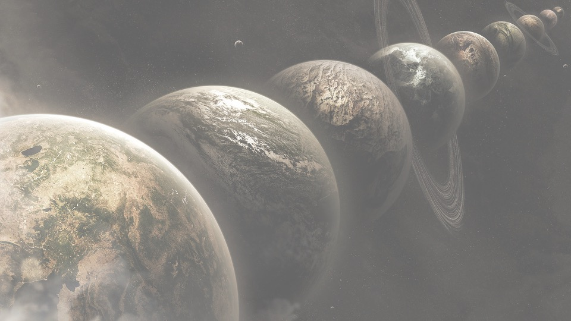
Movies/Shows that Reference Parallel Universes
- Everything Everywhere All at Once (2022)
- Coraline (2009)
- Spider-Man: No Way Home (2021)
- Doctor Strange in the Multiverse of Madness (2022)
- Ant-Man and the Wasp Quantumania (2023)
- Another Earth (2011)
- Star Trek (2009)
- Loki (2021 - 2023)
- What if? (2021 - 2024)
Types of Parallel Universe (Part 1)
In 2003, MIT physicist Max Tegmark created a papaer called "Ultimate Reality" explaining different parallel universes in 4 levels.
Level 1 Regions Beyond Cosmic Horizon
Since our universe is infinite that consists of matter throughout soace ut can be argued that another universe exists that is the same as ours.
Level 2 Pocket Universes
Separate universes are formed creating a bubble undergoing its own form of expansion under the inflation theory which state that our universe was created within unstable energy which expanded the universe.
Level 3 Many Worlds of Quantum Physics
Every possible outcome of a certain event would be manifest in a different parallel world.
Level 4 Mathematical Universes
All mathematical systems show a different reality. It is somewhat the same as level 2 but has different rules.
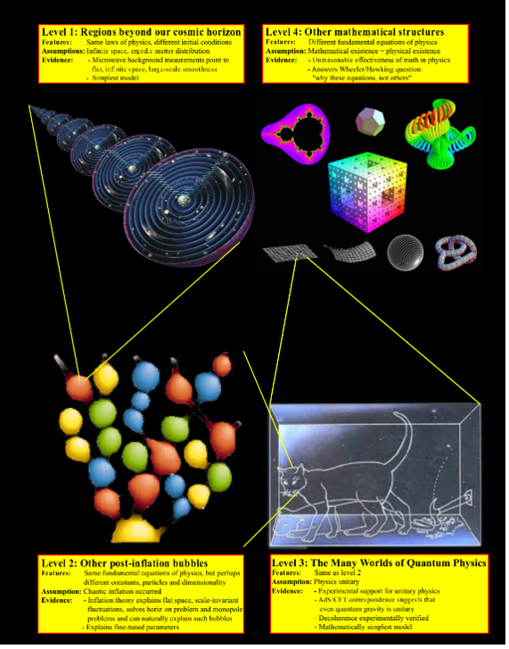
Types of Parallel Universes (Part 2)
In 2011, Brian Greene made a book called "The Hidden Reality" where he would class parallel universes.
Level 1 Cyclic Multiverse
Results from string theory where branes (objects that extend in 1 or more spatial dimensions) would collide creating a Big Bang and making new universes.
Level 2 Brane Multiverse
String theory says there is a possibility that our universe is a 3-dimensional brane while other unniverses may have different dimensional brane form 0-9. This means that we are stuck in a single dimensionan within a larger dimension in space.
Level 3 Quantum Multiverse
The Many-World Interpretation (MWI) of all outcomes that can occur in different universes.
Level 4 Holographic Multiverse
A parallel world exists of our universe that is just mirrored.
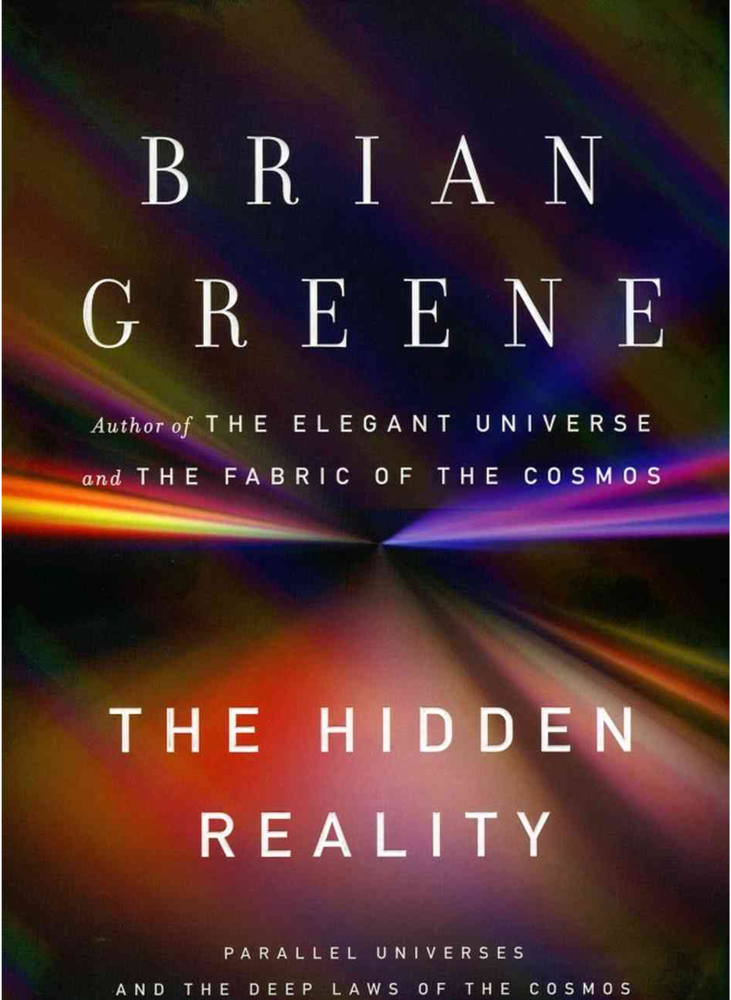
Evidence Proving Parallel Universes (Part 1)
The Mainy Worlds Theory - In 1957 physicist Hugh Everett created this thoery stating that there are infinite possible universes and that everything that could have happened occurred in another reality.
Artifacts - London Hammer that existed 500 million years ago and Antikythera Mechanism a stone computer have been found which suggest these were brought into a this world from another reality.
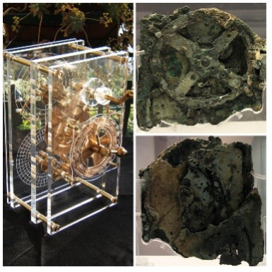
Case of Lerina Garcia - She woke up one morning and nothing seemed familiar about her home, job, and friends which could suggest that she went into a parallel dimension.
Deja Vue - When you are put into a situation or do something you get a feeling it happened before. There are other types of this like Deja Vecu which is a feeling of knowing what will happen and Alter Vu which a person remembers a past event differently. These all suggest that the memories that are seen may be from another version of you.
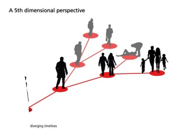
Evidence Proving Parallel Universis (Part 2)
Visitor from Taured - This occurred in 1954 when a mysterious man landed in Tokyo with a passport of a place that doesn't exist he was charged with having a fake passport. However, he siad it was a real place that is in Europe and he even had bank statements. The strange thing is that he would vanish from the hotel he was put int.
Double Split Experiment - Quantum Mechanics found that the interaction of particles can be seen from electrons and photons which can be in multiple places at the same time (Superposition). The double split experiment proved this which could suggest another universe exists.
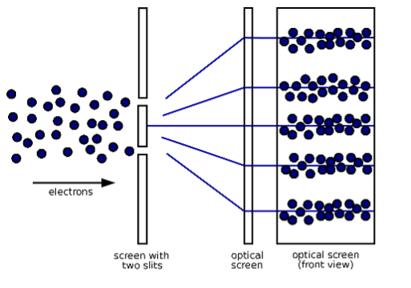
CERN (Large Hadron Collider) - Particle Physicists at CERN have been using the collider to provide information about the universe when are thrown at high speeds. This would measure how long particles vanished to another dimension which suggest a parallel universe exists.
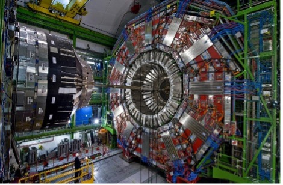
Natural Event shows Evidence of a Parallel Universe
The Big Bang caused cosmic inflation creating a fireball that started to form molecules, stars, and galaxies. The Big Bang has influenced many researchers that there are multiple universes. A physicist Alexander Vilenkin would propose the Theory of Eternal Infaltion which means that cosmic inflation didn't end but it continues in other places forming a new universe and the bubbles can't touch one another. If there is enough inflation to create another Big Bang then it can be observed that a parallel universe will be created that would be forever separate. Some physicists believe if a universe goes on indefinitely the building blocks of matter (atoms, molecules, and substance) can rearrange themselves infinitely in space but at some point the particles would repeat showing that our lives may be repeated in another universe.
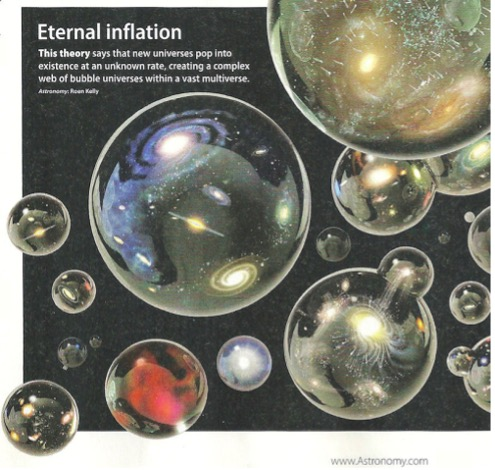
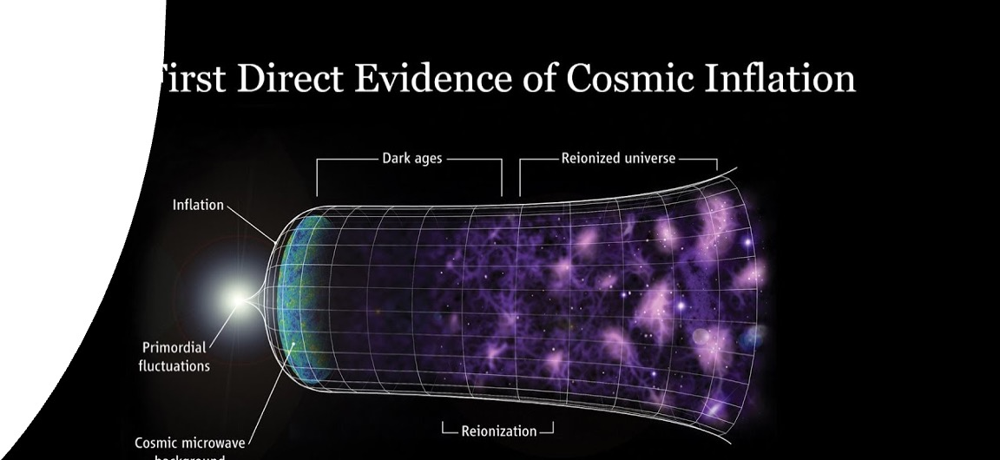
Support of Parallel Universe by Physicists
Physicist Brian Greene in his book called "The Hidden Reality" states, "Matter can arrange itself within an infinite universe. Eventually, the matter has to repeat itself and arrange itself in similar ways." This shows that if the universe is never ending it would consists of infinite parallel universes. Hugh Everett believes that a quantum object causes a split in the universe where it is duplicated splitting one universe for all possible outcomes. An Italian physicist Gabriele Veneziano who discovered string theory states that we live in our own universe that exists with other universes and that these different universes can be in contact. Michio Kaku a physicist talked with a theoretical physicist Steven Weinberg. Weinberg gave an example that shows a parallel universe may exist. He syas to imagine yourself in the exact room where waves of electrons and atoms vibrate hinting at an alternative reality but we just can't interact with them as we can't vibrate constantly with them.
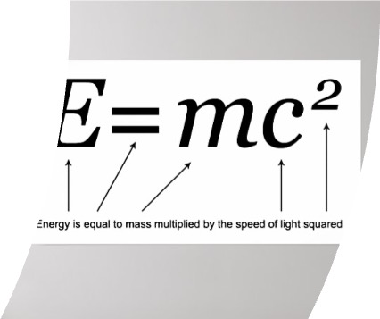
Project Revealing a Parallel Universe
NASA would issue a program using Antarctic Impulsive Transient Antenna (ANITA) that would be placed in Antarctica as it was a cold place with no radio noise to manipulate its finding. This machine would be used to detect radio waves when nuetrinos interact in an Antarctic ice shelf. From New Scientists ANITA discovered signals not coming from space but from the ground. This shows that particles are traveling back in time giving evidence of a parallel universe.
Argument Against a Parallel Universe
The NASA project ANITA discovered that particles are moving back which was anti-climactic as the discovery was exaggerated. The website New Scientists published about the ANITA project made claims they found another universem, but it didn't say whether scientists found it but just inferred it. As the ANITA project detected nuetrinos coming from below the Earth instead of space this led to confusion which may pay point to a parallel world or it may just be a coincidence. Many physicists have explored the topic of a parallel world through books such as Brian Greene, Sean Carroll, and Michio Kaku. Within those books, they have never admitted a parallel universe exists but instead, they only use propositional logic called modus ponens (if X suggest Y and X is true, then Y must also be true.) Without any observable evidence of parallel univeres there is much doubt about whether they exist.
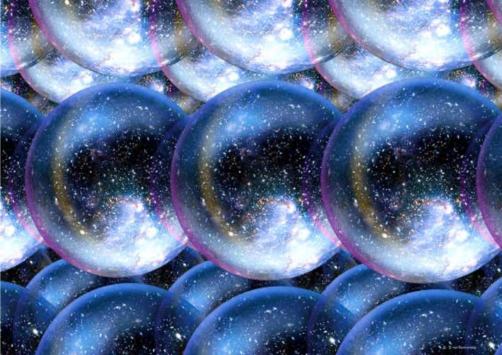
References
- Baker, T. (2017, April 11). 10 most compelling pieces of evidence that prove alternate realities are real. WhatCulture.com. https://whatculture.com/offbeat/10-most-compelling-pieces-of-evidence-that-prove-alternate-realities-are-real
- Stein, V., & Dobrijevic, D. (2021, November 3). Do parallel universes exist? we might live in a multiverse. Space.com. https://www.space.com/32728-parallel-universes.html
- Beeman, A. (2020, October 15). NASA scientists discover possible evidence of a parallel universe. Heavy.com. https://heavy.com/news/2020/05/nasa-finds-evidence-of-parallel-universe/
- Greene, B. (2011, January 24). A physicist explains why parallel universes may exist. NPR. https://www.npr.org/2011/01/24/132932268/a-physicist-explains-why-parallel-universes-may-exist
- Clark, J. (2023, March 8). Do parallel universes really exist?. HowStuffWorks Science. https://science.howstuffworks.com/science-vs-myth/everyday-myths/parallel-universe.htm
- Kaku, M. (2022, June 20). In a parallel universe, another you. The New York Times. https://www.nytimes.com/2022/06/20/special-series/michio-kaku-multiverse-reality.html
- Could there be a parallel universe identical to our own?. Big Think. (2021, September 29). https://bigthink.com/starts-with-a-bang/multiverse-identical-parallel-universe/
- Jones, A. Z. (2019, July 29). What physicists mean by parallel universes. ThoughtCo. https://www.thoughtco.com/types-of-parallel-universes-2698854
- McKeon, A. (2022, December 2). The intersection of technology, Innovation & Creativity. Now. Powered by Northrop Grumman. https://now.northropgrumman.com/despite-the-hype-theres-no-proof-of-a-parallel-universe/
- Tegmark, M. (2014, February 4). Are parallel universes unscientific nonsense? insider tips for criticizing the multiverse. Scientific American Blog Network. https://blogs.scientificamerican.com/guest-blog/are-parallel-universes-unscientific-nonsense-insider-tips-for-criticizing-the-multiverse/